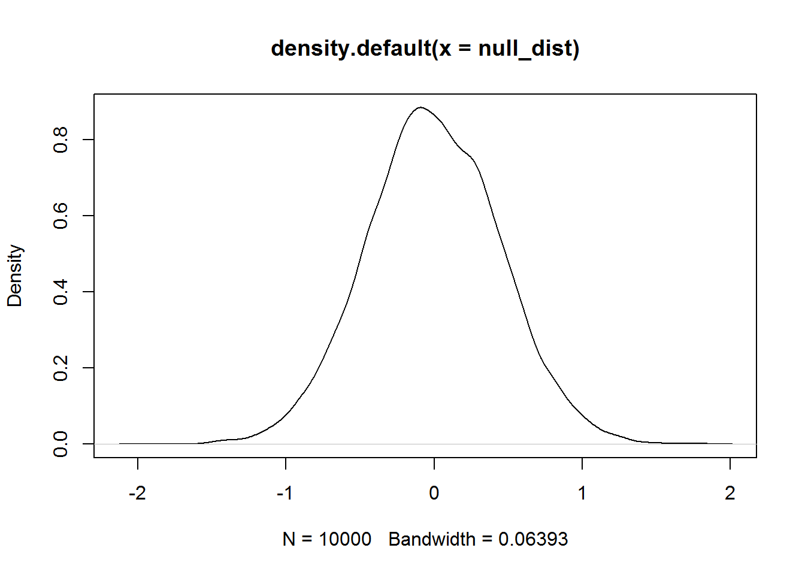
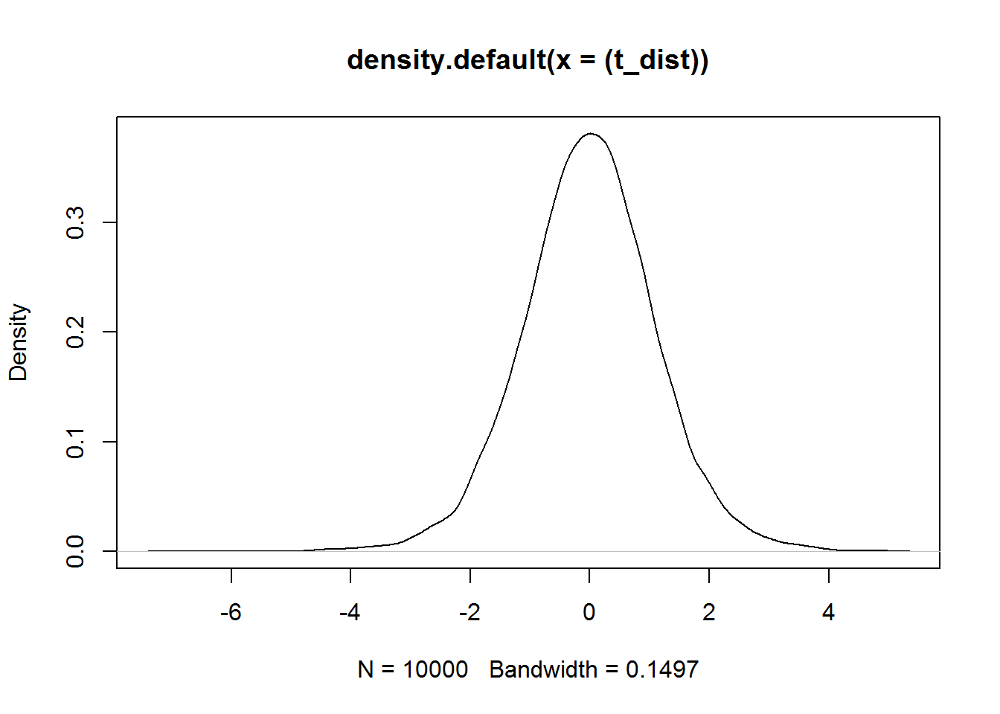
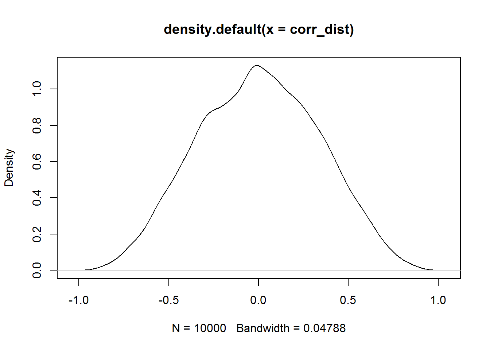
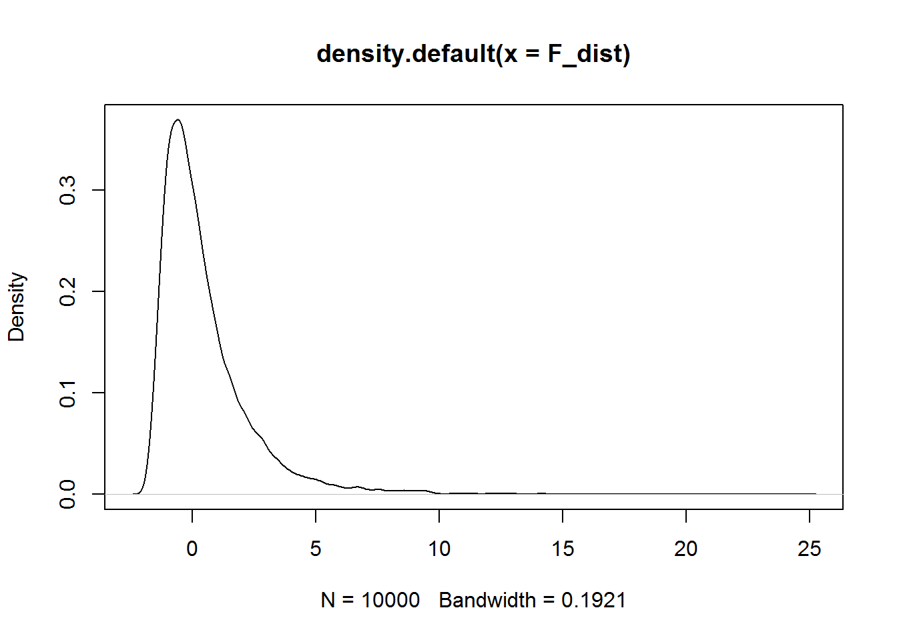

null_dist <- c()
for(i in 1:10000) {
sample_1 <- rnorm(10,0,1)
sample_2 <- rnorm(10,0,1)
null_dist <- c(null_dist,mean(sample_2)-mean(sample_1))
}
plot(density(null_dist))
z <- density(null_dist)
t_1 <- which(z$x >= 0.5)
z$y[t_1[1]]## [1] 0.4764121 t_2 <- which(z$x >= 1.0)
z$y[t_2[1]]## [1] 0.07425268 t_3 <- which(z$x >= 1.5)
z$y[t_3[1]]## [1] 0.003334106 t_4 <- which(z$x >= 2.0)
z$y[t_4[1]]## [1] 1.101745e-05 t_5 <- which(z$x >= 2.5)
z$y[t_5[1]]## [1] NA #t_1 <- which(z$x >= 0.5 & z$x <= -0.5) 1 - pt(c(.5,1,1.5,2,2.5), 9)## [1] 0.31453565 0.17171820 0.08392533 0.03827641 0.01693091 t_dist <- c()
for(i in 1:10000) {
sample_3 <- rnorm(10,0,1)
t_dist <- c(t_dist,(mean(sample_3)- 0)/(sd(sample_3)/(sqrt(length(sample_3)))))
}
plot(density((t_dist)))
z <- density(t_dist)
t_1 <- which(z$x >= 0.5)
z$y[t_1[1]]## [1] 0.3365395 t_2 <- which(z$x >= 1.0)
z$y[t_2[1]]## [1] 0.2295245 t_3 <- which(z$x >= 1.5)
z$y[t_3[1]]## [1] 0.1279021 t_4 <- which(z$x >= 2.0)
z$y[t_4[1]]## [1] 0.06262899 t_5 <- which(z$x >= 2.5)
z$y[t_5[1]]## [1] 0.02730707 corr_dist <- c()
for(i in 1:10000) {
x <- rnorm(10,0,1)
y <- rnorm(10,0,1)
corr_dist <- c(corr_dist, cor(x,y))
}
plot(density(corr_dist))
z <- density(corr_dist)
c_1 <- which(z$y >= 0.05)
abs(z$x[c_1[1]])## [1] 0.8137364 Subjects <- 1:4
A <- c(1,2,3,4)
B <- c(3,4,5,6)
C <- c(5,6,7,8)
Mean_subject <- c(A,B,C)
all_data <- data.frame(Subjects = as.factor(Subjects), Mean_subject, A,B,C)
aov_out <- aov(Mean_subject~A*B*C, all_data)
library(xtable)## Warning: package 'xtable' was built under R version 3.5.2 knitr::kable(xtable(summary(aov_out)))| Df | Sum Sq | Mean Sq | F value | Pr(>F) | |
|---|---|---|---|---|---|
| A | 1 | 15 | 15 | 3.75 | 0.0888262 |
| A:B | 1 | 0 | 0 | 0.00 | 1.0000000 |
| A:B:C | 1 | 0 | 0 | 0.00 | 1.0000000 |
| Residuals | 8 | 32 | 4 | NA | NA |
Subjects <- rep(1:4,3)
df2 <- 8
df1 <- 2
F_dist <- c()
for(i in 1:10000) {
A <- rnorm(4,0,1)
B <- rnorm(4,0,1)
C <- rnorm(4,0,1)
Mean_subject <- c(A,B,C)
corr2_dist <- cor(Subjects,Mean_subject)
F_dist <- c(F_dist, (corr2_dist/(1-corr2_dist))*(df2/df1))
}
plot(density(F_dist))
z <- density(F_dist)
f_1 <- which(z$y >= 0.05)
z$x[f_1[length(f_1)]]## [1] 2.936103